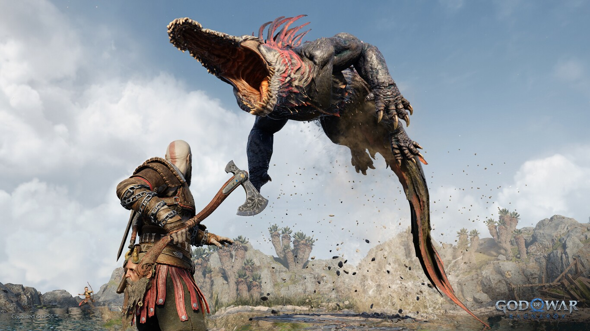
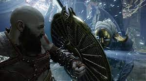
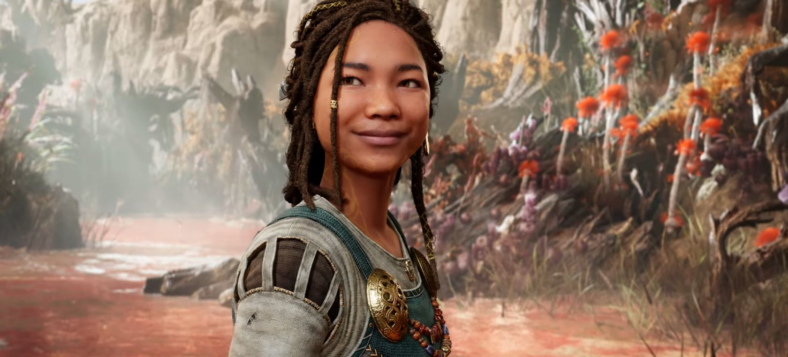

El hit mas grande de 2018 y ahora en 2022
¿Cual es la entrega que marcó tu vida?
Ver mas de Ragnarok¿Quien es Kratos?
Kratos es un personaje de videojuegos de la serie God of War de Santa Monica Studio, que se basó en la mitología griega, antes de pasar a la mitología nórdica. también conocido como el Fantasma de Esparta, apareció por primera vez en el videojuego God of War de 2005, lo que llevó al desarrollo de ocho juegos con el personaje como protagonista.
Jugabilidad, Historia y Mas
God Of War Ragnarok
Adentrate a un mundo lleno de criaturas mitologicas
junto con el fantasma de esparta y su hijo atreus.

Nuevas criaturas

Nuevos enemigos

El final de una mitologia
